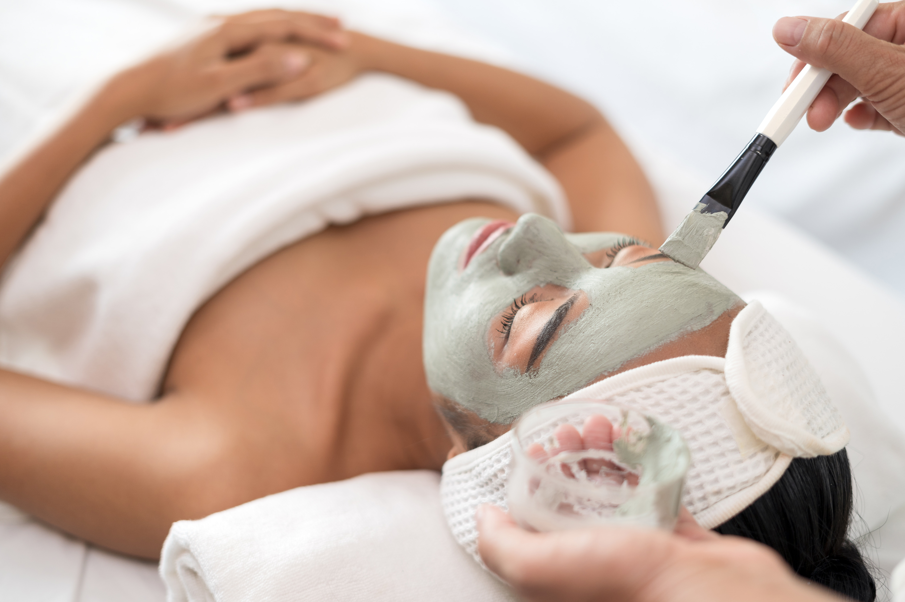

Dewy Radiance
Hydrating Facial
Hydrating Facial
in Shoreline, WA
Intense moisture infusion — hyaluronic acid, vitamin-rich serums, and nourishing masks for plump, glowing skin.
Book Your Facial
Intense moisture infusion — hyaluronic acid, vitamin-rich serums, and nourishing masks for plump, glowing skin.
Book Your Facial"Hydrated skin is healthy skin. Our hydrating facial floods every layer with moisture-binding ingredients — the transformation from dull and tight to luminous and plump is immediate and remarkable."
Dehydration is the most common and most overlooked skin complaint. It differs from dryness — dehydrated skin lacks water at the cellular level, while dry skin lacks oil — and it affects all skin types, including oily skin. When the skin is dehydrated, it appears dull, fine lines look more pronounced, texture feels rough or tight, and the natural radiance that healthy skin possesses simply disappears. Daily water intake, weather, indoor heating and air conditioning, prolonged screen exposure, and inadequate skin care all contribute to the condition. The result is skin that looks tired regardless of how much sleep you get or how much water you drink.
The Hydrating Facial at La Belle SPA in Shoreline addresses dehydration at every layer of the skin through a professional treatment protocol that goes far beyond what a moisturizer can achieve at home. By preparing the skin correctly — cleansing and light exfoliation to remove the barrier of dead cells — and then applying medical-grade hyaluronic acid, vitamin-rich serums, and moisture-sealing masks in a deliberate sequence, we achieve penetration and hydration levels that simply aren't possible with over-the-counter products. The visible difference after a single session is one of the most gratifying outcomes in skin care.
What distinguishes a professional hydrating facial from an at-home mask night is serum layering — the application of multiple active serums in a specific sequence, each chosen to enhance the penetration and efficacy of the next. Our estheticians apply vitamin C serum first to brighten and stimulate collagen, followed by hyaluronic acid at multiple molecular weights to hydrate at different skin depths, then niacinamide to strengthen the barrier and even skin tone, and finally a peptide complex to support firmness and elasticity. Each layer is pressed into the skin rather than rubbed, ensuring maximum retention and minimal evaporation.
The optional Serum Infusion add-on takes this further with a professional-grade infusion device that drives active ingredients deeper into the dermis than topical application alone can reach. For clients with mature skin, significant dehydration, or visible fine lines, the infusion upgrade delivers results that are noticeably more dramatic and longer-lasting. The full experience — cleanse, exfoliation, serum layering, infusion, mask, and finish — leaves the skin looking as though it has been rested, nourished, and genuinely cared for at a fundamental level.

60 minutes of deep hydration. Add serum infusions for an elevated glow experience.